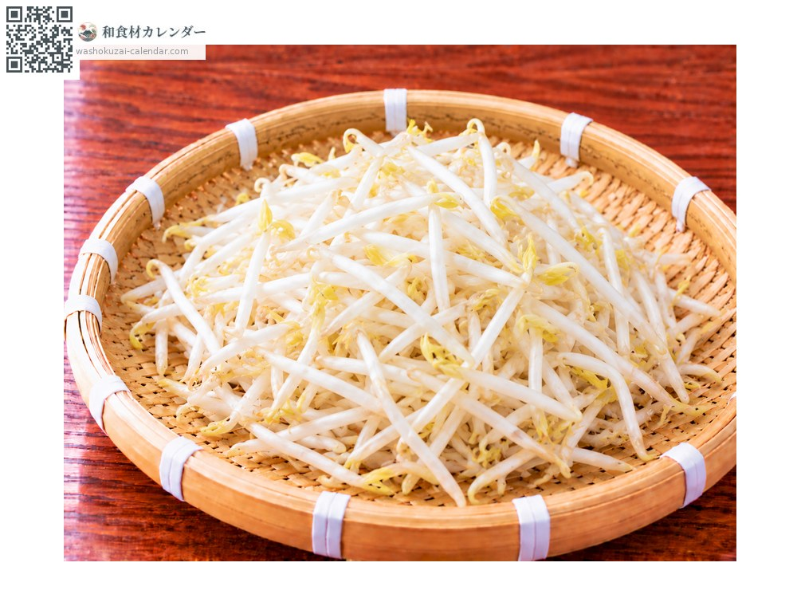
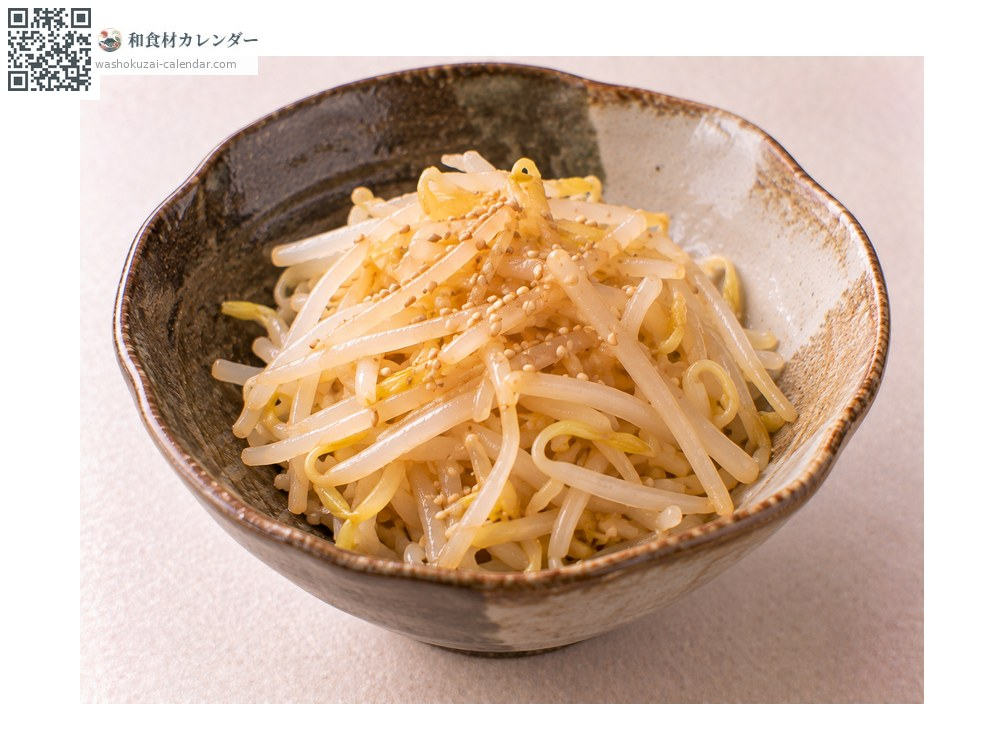
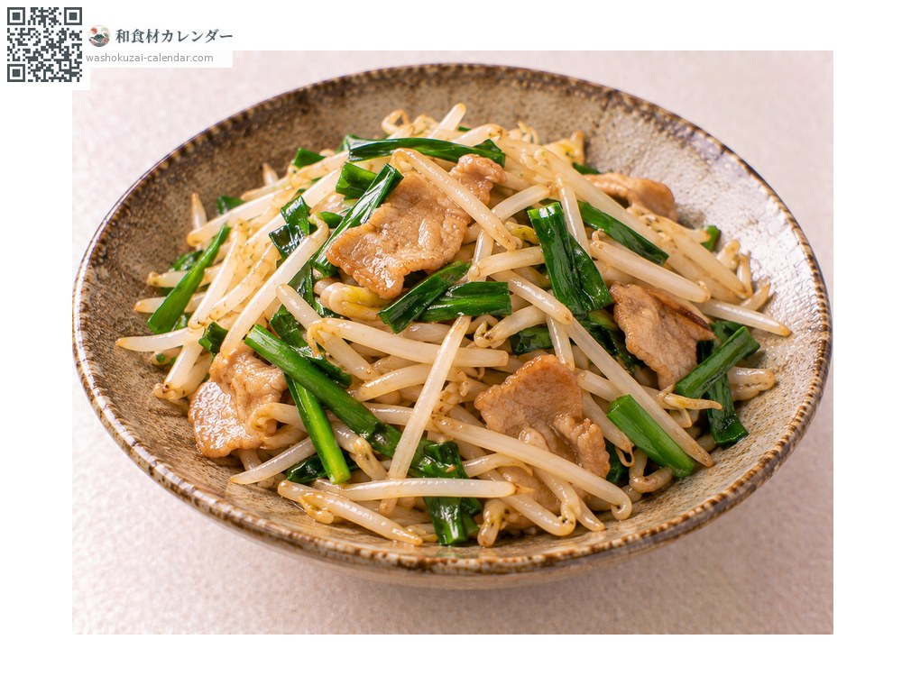
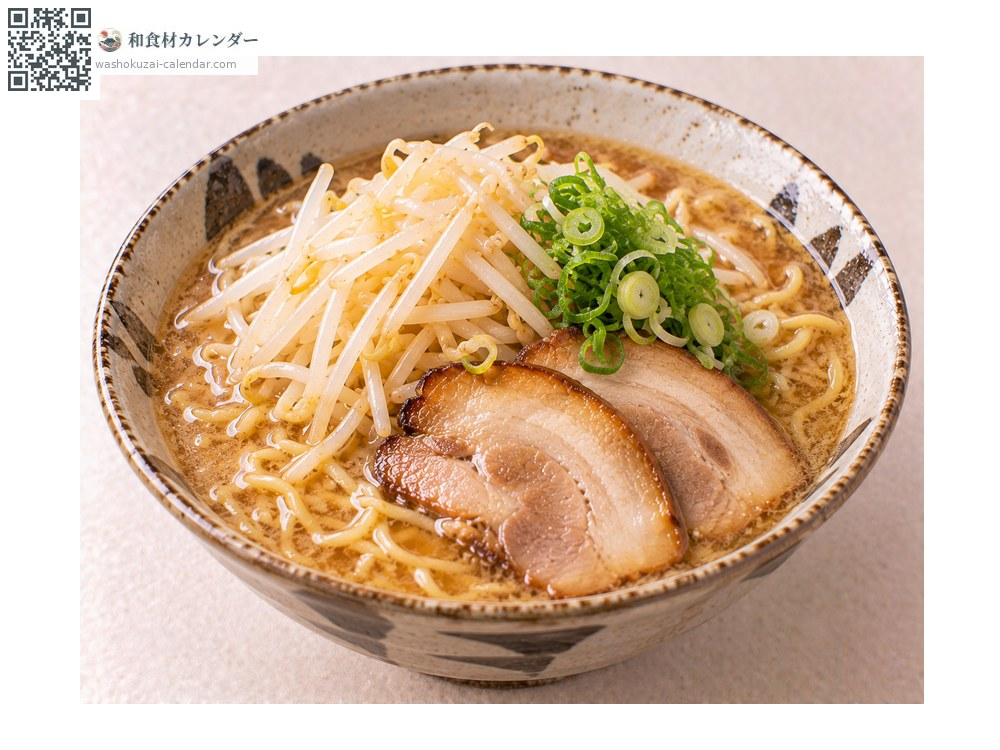
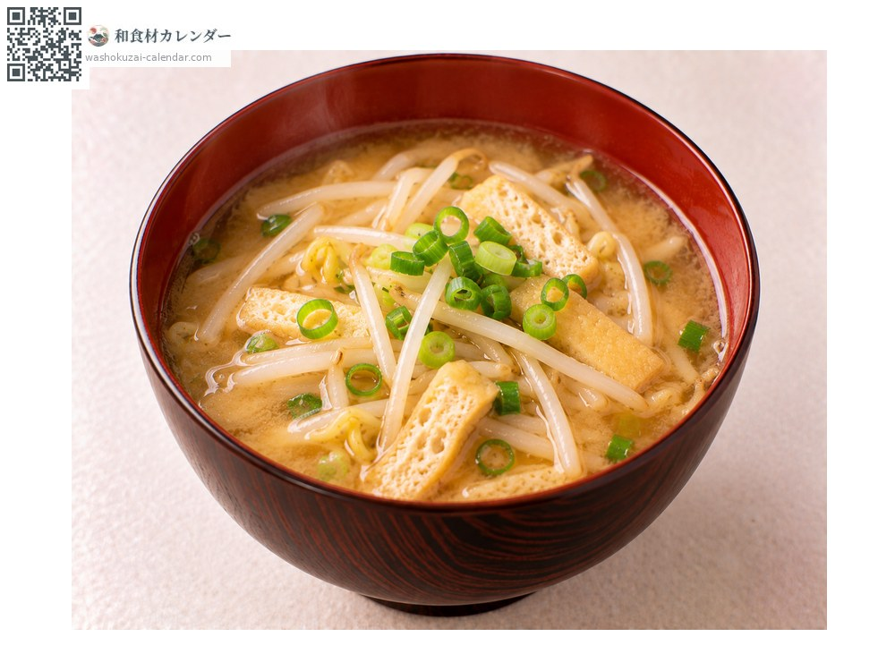

蔬菜
豆芽菜
もやし もやし moyashi
别名moyashi
尚未登记应季时期

应季时期
1月
2月
3月
4月
5月
6月
7月
8月
9月
10月
11月
12月
应季有供应
烹饪方法

凉拌
焯水后用麻油与盐凉拌。迅速放凉才能保住口感。

热炒
大火短时间拌炒，重点是别让它出水。

拉面配料
快速焯水后铺在面上，保留爽脆感。

味噌汤
最后才加，不要久煮。
挑选方法
茎白而粗、根部没有变成褐色。看起来通透且没有折断。
保存方法
容易坏。连袋冷藏，当天或隔天用完。泡在水里可以延长保存。
主要产地
小知识
绿豆芽流通量最大，黄豆芽用于韩式料理，黑毛豆芽则在关西受欢迎。在遮光的工厂里发芽，不受天候影响，是少数全年价格稳定的蔬菜。